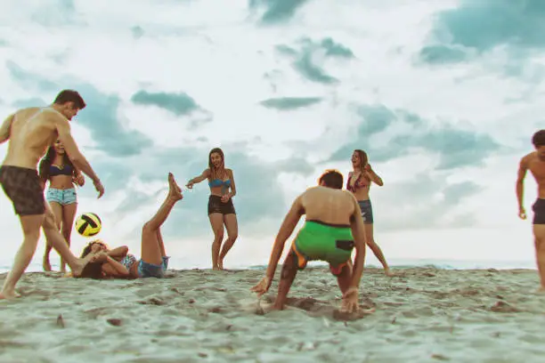
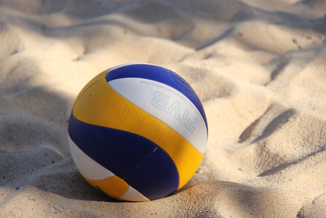
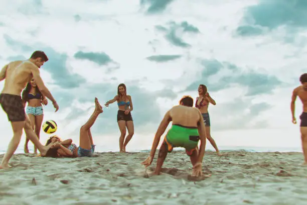
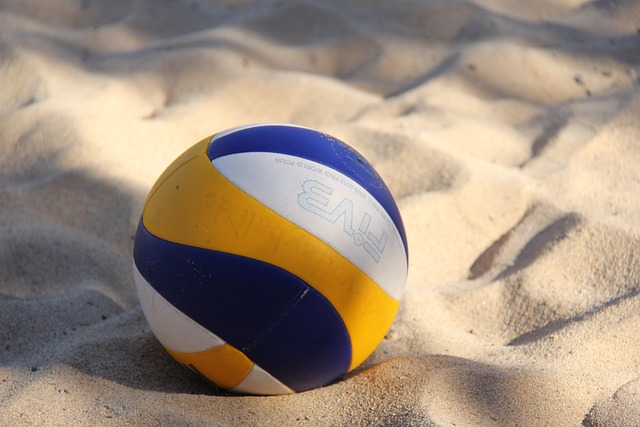

Volley-ball
Volleyball is a popular team sport with a rich history that dates back to the late 19th century. It was invented in 1895 by William G. Morgan, a physical education instructor in Holyoke, Massachusetts, USA. Morgan created the game as an indoor alternative to basketball, with the initial name "mintonette." The game's objective was to keep a ball in motion over a high net while avoiding letting it touch the ground. Over time, it evolved into the modern sport of volleyball, with established rules and regulations. Volleyball quickly gained popularity and spread to other countries. It became an Olympic sport in 1964 and has since become a favorite pastime and competitive sport worldwide, with both indoor and beach volleyball being enjoyed by millions of people. The sport has a vibrant international community, with numerous championships, leagues, and events showcasing the athleticism and teamwork of its players.
 


